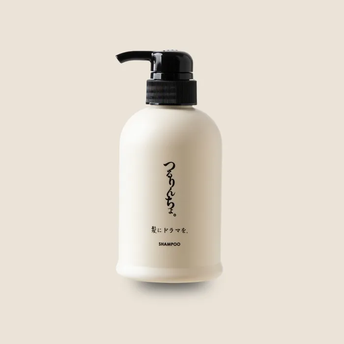
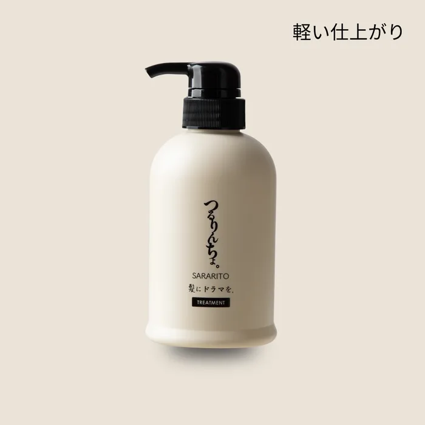
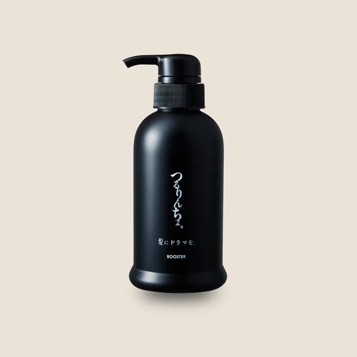

Authorized Dealer
つるりんちょ。（TSURURINCHO）正規取扱店
名前で覚えるかたも多い サロン専売の洗い流さないトリートメント
大容量サイズまで店頭でお選びいただけます
プロの仕上がりを 毎日の髪へ
つるりんちょ。の原点は 縮毛矯正などの施術で髪を守るために使われていた美容室の「処理剤」 その役割をシャンプーとトリートメントへ置き換え 誰が使っても安定した質感へ近づけるという発想から生まれました
主な取扱ライン
ラインナップは時期により変わります 全取扱ブランドを見る →
主要アイテム

01 / SHAMPOO
シャンプー
熱履歴・うねり・ダメージが気になる髪
やさしい洗浄設計に 毛髪補修を考えた成分を組み合わせたシャンプー 洗う工程から髪の内側と質感を整え 均一なツヤ髪へ導きます
02 / TREATMENT
トリートメント レギュラー
熱ダメージ／なめらかさとまとまり
美容室の施術でも使われるレブリン酸と 分子量の異なるケラチンに着目 アイロンやドライヤーの熱を受けた髪を しなやかで均一な手触りへ整えます

03 / AIR
トリートメント エアー
細毛・軟毛／軽やかな仕上がり
髪の軽さを残しながら するりとまとまる質感へ 重さやベタつきが苦手な方 やわらかな動きとサラサラ感を大切にしたい方に

04 / BOOSTER
ブースターシャンプー
3日に1回／蓄積をリセットするスペシャルケア
スタイリング剤やケア成分の蓄積による重さを洗い流し 次に使うケアがなじみやすい素髪環境へ よく泡立て 3分間の泡パックを行います
三日に一度 髪をリセット
- 39℃以下のお湯で 髪と地肌を十分に予洗いします
- ブースターをよく泡立て 毛先は指を通しながら 地肌は丁寧に揉み洗いします
- 泡を髪全体へ行き渡らせて3分置き よく流してトリートメントで整えます
2026年のリニューアル後は髪質とダメージに合わせた複数ラインがあります 旧製品名だけで判断せず 現在の髪と仕上がりの好みからお選びください
つるりんちょ。を取り扱う SEAMの店舗
- 店舗情報 →
SEAM GINZA
東京都中央区銀座1-8-19 ONE GINZA 3F
- 店舗情報 →
gallica / SEAM
東京都港区南青山3-15-15 Louis IIビル
- 店舗情報 →
SEAM SAPPORO
北海道札幌市中央区南2条西3-15-2
- 店舗情報 →
SEAM OSAKA HORIE
大阪府大阪市西区南堀江1-11-21 STORK南堀江 1F
- 店舗情報 →
SEAM NAGOYA
愛知県名古屋市中区栄5-16-19 ネイリックス 1F・2F
- 店舗情報 →
SEAM FUKUOKA
福岡県福岡市中央区大名2丁目1-53 BPRスクエア天神大名 1F
- 店舗情報 →
gigi SEAM
栃木県宇都宮市鶴田町419-7 インターパーク内
取扱・在庫状況は店舗により異なります お買い物だけのご来店も歓迎です
エリア別のご案内 銀座で買うだけOK 表参道で買うだけOK 札幌で買うだけOK 大阪で買うだけOK 名古屋で買うだけOK 福岡で買うだけOK 宇都宮で買うだけOK
Hair Finder
つるりんちょ。が今の髪に合うか
3分でわかります
髪の太さ・量・くせ・カラーや矯正の履歴から
197ブランド横断であなたに合うアイテムをご提案します
実際に見て選びたい方は SEAMの店舗 へ（購入だけの来店OK）
販売のみ・ネットショップでのご購入について
つるりんちょ。は美容室専売品（サロン専売品）です SEAMは正規取扱店として販売のみのご来店を歓迎しています 施術も予約も要りません
店頭でご登録いただくと 買い足しは会員制のネットショップから通販でご注文いただけます
よくある質問
- つるりんちょ。は正規品ですか
- SEAMはメーカー公認の正規取扱店です つるりんちょ。は正規ルートの商品のみをお取り扱いしています
- つるりんちょ。はどの店舗で買えますか
- SEAMの全国7店舗(銀座・表参道・札幌・大阪・名古屋・福岡・宇都宮)でお取り扱いしています 在庫状況は店舗・時期により異なるため 確実にお求めの場合は店舗へお問い合わせください
- つるりんちょ。は通販で買えますか
- SEAMの会員制オンラインショップでお求めいただけます ご登録は店頭のみのご案内です フリマや非正規の出品は真贋や保管状態が分からないため 正規の取扱店をおすすめします
- つるりんちょ。が自分に合うか分かりません
- 合うケアは髪の太さ 量 くせ カラーや矯正の履歴によって変わります SEAMの無料の髪格診断で 今の髪に合うアイテムをご提案します
関連ページ サロン専売品とは